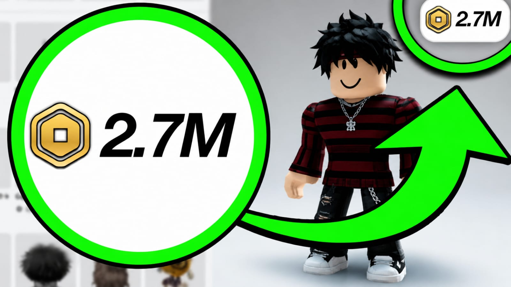

Cómo Cuidar tus Robux y tu Cuenta
Los Robux son una parte importante dentro de Roblox, ya que permiten comprar accesorios, ropa, pases de juego, mejoras y otros artículos. Por eso es muy importante aprender a cuidar tu saldo y proteger tu cuenta de engaños, robos o páginas falsas.
¿Por qué debes cuidar tus Robux?
Muchos jugadores pierden sus Robux por confiar en enlaces falsos, compartir datos personales o entrar en páginas que prometen recompensas imposibles. Cuidar tus Robux significa usar métodos seguros, revisar bien dónde haces clic y mantener tu cuenta protegida.
20 consejos para proteger tus Robux y tu cuenta
- 1. Nunca compartas tu contraseña con nadie, aunque diga ser tu amigo.
- 2. No entres en páginas que prometen Robux infinitos o gratis de forma sospechosa.
- 3. Activa la verificación en dos pasos para agregar más seguridad.
- 4. Usa una contraseña fuerte con letras, números y símbolos.
- 5. No uses la misma contraseña de Roblox en otras páginas.
- 6. Revisa siempre que estés entrando a la página oficial de Roblox.
- 7. No descargues programas que prometen generar Robux.
- 8. No prestes tu cuenta a otras personas.
- 9. Evita hacer clic en enlaces raros enviados por mensajes o comentarios.
- 10. No ingreses tu usuario y contraseña en sitios desconocidos.
- 11. Revisa bien antes de comprar ropa, accesorios o pases de juego.
- 12. No aceptes intercambios sospechosos si no estás seguro.
- 13. Ten cuidado con personas que dicen duplicar tus Robux.
- 14. No compartas códigos de gift cards con desconocidos.
- 15. Verifica el precio antes de confirmar una compra.
- 16. Mantén actualizado el correo conectado a tu cuenta.
- 17. No uses extensiones extrañas en tu navegador.
- 18. Cierra sesión si usas Roblox en una computadora que no es tuya.
- 19. Revisa la actividad de tu cuenta si notas algo raro.
- 20. Si algo parece demasiado bueno para ser verdad, probablemente sea falso.
Señales de una página falsa
Una página falsa normalmente promete Robux gratis, regalos inmediatos o premios sin sentido. También puede pedirte iniciar sesión fuera de Roblox, copiar códigos extraños o completar encuestas sospechosas. Si una página te pide tu contraseña, lo mejor es salir inmediatamente.
Cómo comprar Robux de forma segura
La forma más segura de comprar Robux es usando los métodos oficiales de Roblox, tarjetas de regalo legítimas o tiendas reconocidas. Antes de pagar, revisa que el sitio sea confiable y que no estés en una copia falsa de la página.
Qué hacer si crees que tu cuenta está en peligro
Si notas que tu cuenta tiene movimientos raros, cambia tu contraseña de inmediato, revisa tu correo, activa la verificación en dos pasos y cierra sesiones abiertas. También puedes contactar al soporte oficial de Roblox si necesitas ayuda para recuperar el acceso.
Conclusión
Cuidar tus Robux no es difícil, pero sí requiere atención. Evita páginas falsas, no compartas tus datos y usa siempre métodos oficiales. Mientras más protegida esté tu cuenta, menos riesgo tendrás de perder tus Robux o tus artículos dentro de Roblox.